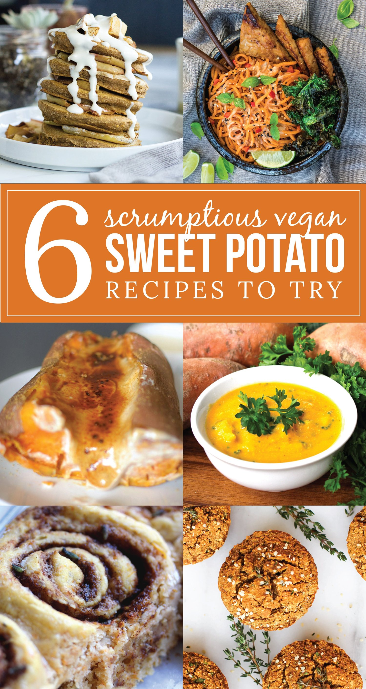
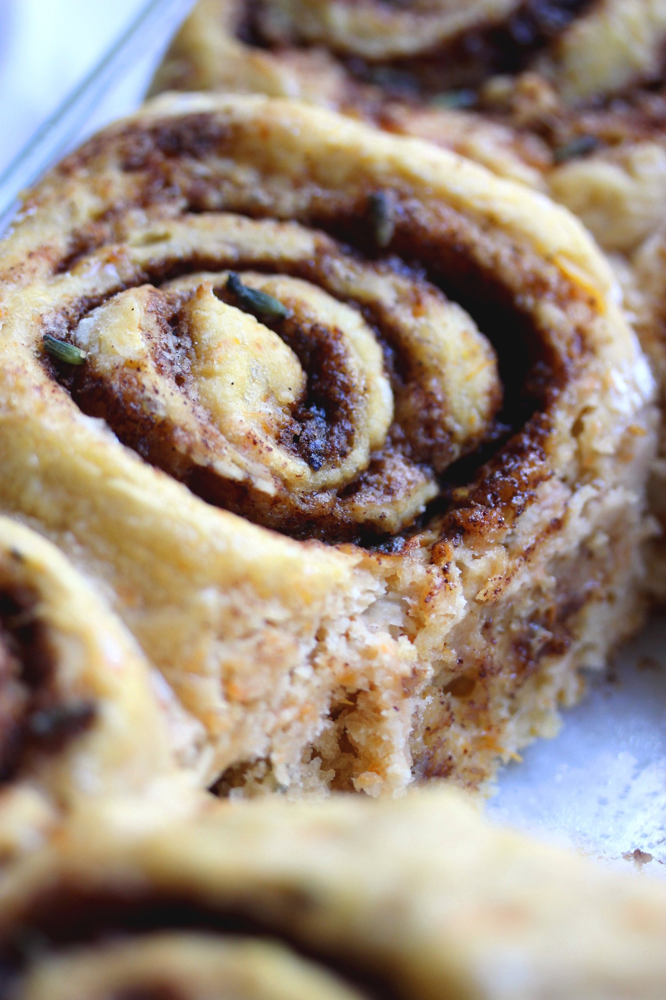
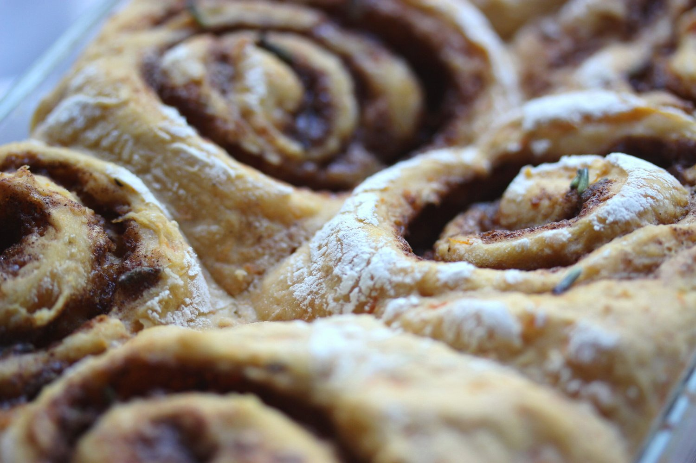
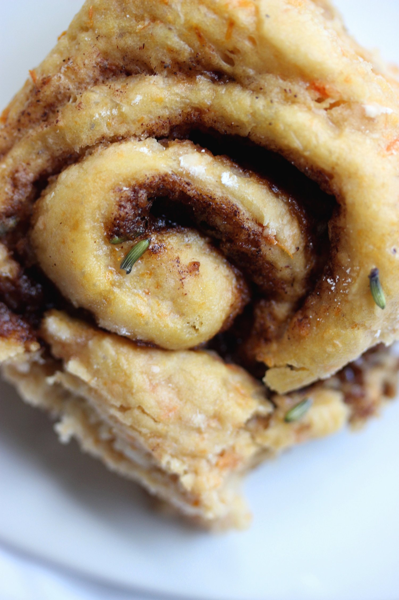
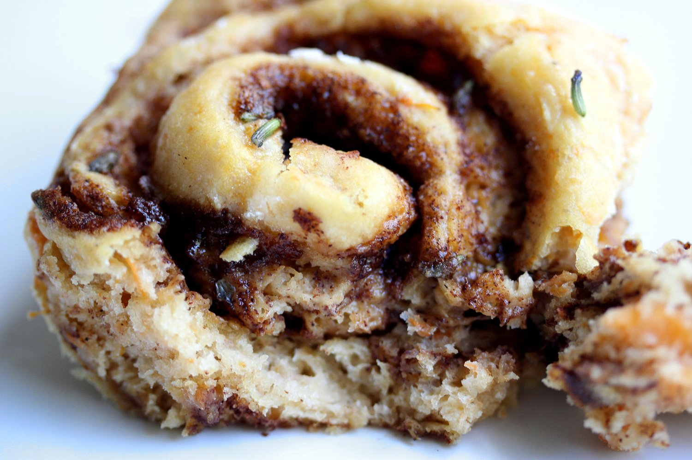

Lavender Sweet Potato Cinnamon Rolls - 6 SCRUMPTIOUS VEGAN SWEET POTATO RECIPES





Warm, fluffy lavender sweet potato cinnamon rolls that will have you cheering with joy for fall. These comforting, delicate cinnamon rolls are vegan, dairy free, and refined sugar free. These cinnamon rolls make for a delicious treat to share with friends and family during these chilly fall nights.
This recipe is a collaboration of 6 absolutely scrumptious potato recipes, all created by some outstanding bloggers. If you’re looking for some vegan sweet potato inspiration, check out the other 5 recipes at the end of this post.
Fall is (quite literally) just around the corner! Only 5 more days, and we're in it deep. That can only mean one thing for me - SWEET POTATOES!! While I weep over the fading warmth of the summertime, fall foods console me through the dreaded cold weather. Pumpkin, sweet potatoes, various winter squash...these are a few of my favorite things.
Truthfully, I've never made yeasted cinnamon rolls before. But I figured, why not add an extra challenge by making them sweet potato cinnamon rolls? Just because I can, and it'd be epic. Thankfully, this was a serious success. These cinnamon rolls came out warm, fluffy, intricately spiced, and absolutely delightful.
The lavender within is absolutely divine. My dad gave me fresh lavender from his yard for my birthday, and I knew this would be the perfect way to incorporate it. You'll notice not much is used in this recipe, and that's because lavender is so potent! A little goes a long way, and the subtle touches of lavender add such a delightful flavor to these cinnamon rolls. Without the lavender, this recipe will also come out great, but if you have it, I really recommend trying this magical flavor experience!
One of by biggest worries was that the texture of the cinnamon rolls would flop. That's the most important part of a cinnamon roll, right?! Since sweet potato is incorporated into the dough, I wasn't too sure about it. But by the time the sweet potatoes are mashed up into the flour, everything comes out juuuust fine. Don't worry, homie. Is it doughy? Yep. Is it fluffy? Yep. Breaddddd. I love it.
I totally believe there's a method to eating a cinnamon roll. For me, the method is 1) Pull apart the outer ring and enjoy the crisp bready edges 2) Pop out the most doughy, moist portion in the center and drool over the cinnamon, sugary sweetness 3) Eat everything else, which I guess is yummy too, or whatever. You follow me on this? What's your method?!These fluffy, delicate sweet potato cinnamon rolls are vegan, dairy free, and refined sugar free. They'd make for a delicious treat to share with friends and family during these upcoming chilly fall nights.
Don’t forget; if you want some more amazing sweet potato recipes for the fall, check out the other 5 vegan recipes at the end of this post. All of the recipes created by these fantastic bloggers just blow me away.
Lavender Sweet Potato Cinnamon Rolls
Makes: 6 Cinnamon Rolls
Sweet Potato Dough
-
1 envelope active dry yeast
-
1/2 cup warm water
-
2 cups all-purpose flour
-
2 TBSP coconut sugar
-
½ cup mashed cooked sweet potatoes (4 oz)
-
1 TBSP vegan butter, melted
Lavender Cinnamon Filling
-
1/3 cup coconut sugar
-
1 tsp cinnamon
-
1 tsp dried lavender
-
2 TBSP vegan butter, softened
-
In a small bowl, mix the envelope of dry yeast with warm water. Let sit for at least 5 minutes, until you see the yeast begin to foam at the top.
-
In a large bowl, mix together the flour and coconut sugar.
-
In a third bowl, mix together the mashed sweet potatoes, melted butter, and the foaming yeast from the first bowl. Once mixed, pour into the large bowl of dry ingredients and mix together. You will need to use your hands to properly mix the contents until a thick dough forms. If you think the dough is too sticky, add a little more flour. Conversely, if the dough is too dry, add more water.
-
Use flour to completely coat a flat surface, and knead the dough on the surface for 5-10 minutes. Once complete, place the dough ball into a large, lightly oiled bowl. Cover the bowl with plastic wrap and let sit in a warm place for a minimum of an hour to rise.
-
After the dough has risen, mix together the coconut sugar, cinnamon, lavender, and softened butter. Keep to the side to use as the center filling.
-
Punch down the sweet potato dough. Remove the deflated dough from the bowl and place it on a floured surface. Using a rolling pin or just your hands, roll the dough out into a rectangular shape. Use your own discretion to ensure the dough is not too thin, but not thick.
-
Spread the lavender cinnamon filling evenly across the top of the dough. You want a nice thin layer to cover all surfaces.
-
Cut the dough into 6 long strips, rolling each strip up tightly and placing one by one in a baking dish sprayed with nonstick spray. I used a 4x9 dish and any smaller would not have worked. A 4x9 or 9x9 should work fine.
-
Once all of the rolls are placed in the dish, let it sit another 45 minutes to rise.
-
Pre-heat the oven to 375 F right before the rolls are finished rising the second time.
-
Bake for 15-20 minutes, until the tops are lightly browned. Let cool 5 minutes, then enjoy!
5 More Scrumptious Vegan Sweet Potato Recipes
-
Sweet Potato Pancakes from Love Me, Feed Me
-
Vegan Cheddar Broccoli Soup from Healthy Helper
-
Creme Brûlée Stuffed Sweet Potato from Athletic Avocado
-
Creamy Sweet Potato Noodles with Garlic Tempeh and Crispy Kale from Choosing Chia
-
Sweet Potato Herb Savory Muffins from Feasting on Fruit